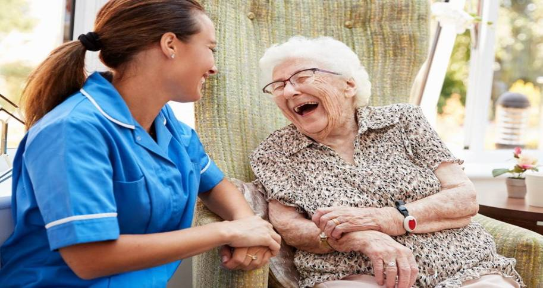
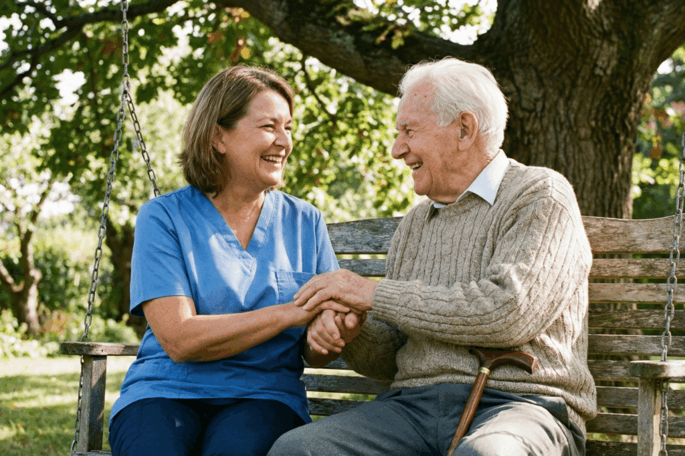
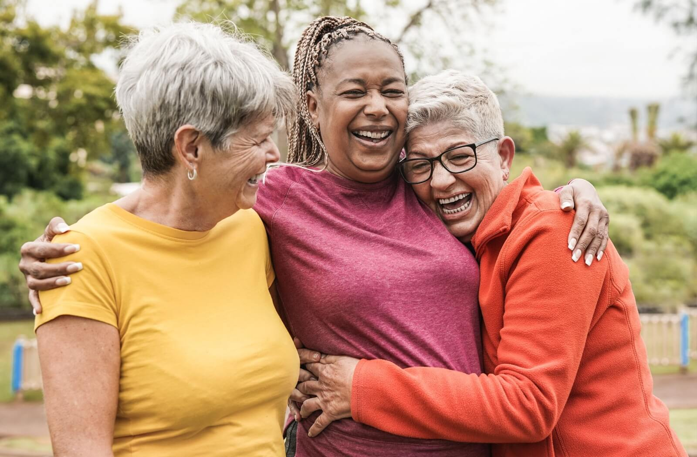
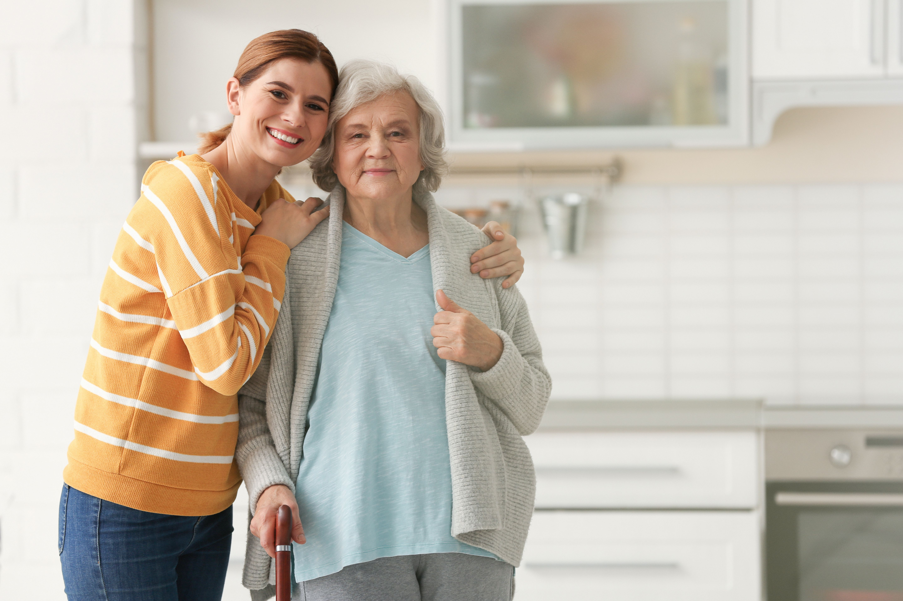
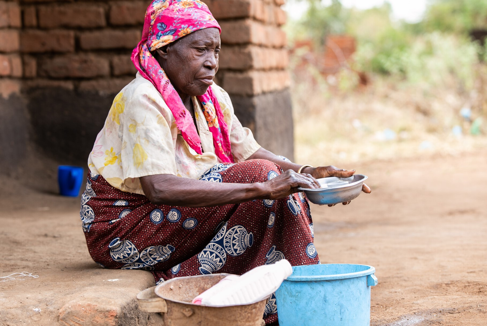
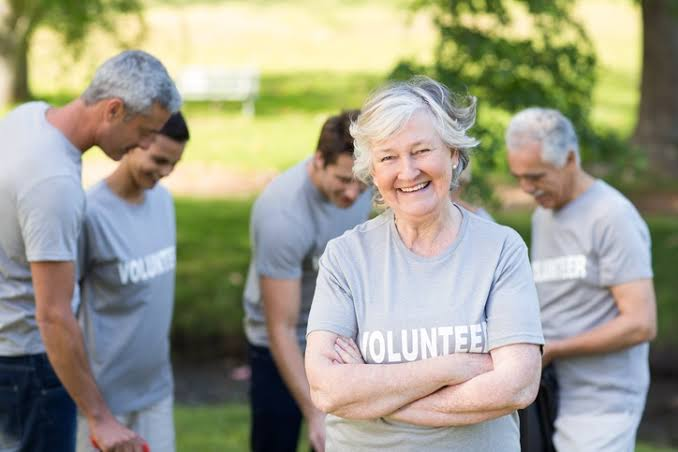

01
ROSSLyn FOUNDATION | CARE • DIGNITY • HOPE
Every Elder Deserves To Age With Dignity
Growing older should never mean being forgotten. At Rosslyn Foundation, we believe every older adult deserves compassionate care, meaningful support, and the dignity to live a fulfilling life.
Find SupportHelping our elders live with dignity
HELP WHEN IT MATTERS
Find the Support You or Your Loved One Needs.
Navigating support options can feel overwhelming. We help older adults and their families explore available assistance and understand the next steps.

Every elder deserves support that respects their story, choices, and dignity.
Rosslyn Foundation
BE PART OF THE CHANGE
There Are Many Ways to Make a Difference.
Whether you give, volunteer, or connect someone with support, your contribution can help an older person feel seen and cared for.
Volunteer
Share your time, skills, and kindness to help build a more connected community.
Give your timeRefer Someone
Help an older adult or family discover resources that may be available to them.
Refer a person
YOUR KINDNESS COUNTS
Get Involved
Small Acts. Lasting Impact.
Every thoughtful action can help create a kinder future for our elders.

Care With
Dignity
Dignity
WHY OUR WORK MATTERS
Discover Our Mission
Every Elder Deserves to Live With Dignity.
Age should never mean facing life’s challenges alone. We believe older adults deserve practical support, respect, and the freedom to live as independently as possible.
Financial AssistanceHelping people explore resources for essential needs.
Dignity and IndependenceRespecting personal choices and individual circumstances.
Responsible SupportConnecting people with clear information and appropriate services.
HOW WE HELP
Helping Our Elders Live With Dignity and Hope.
Our work focuses on practical support, human connection, and helping older adults access resources that can improve everyday life.
01 / SUPPORT
Financial Guidance
We help people understand available assistance options and plan for urgent or ongoing needs.
Learn more02 / COMMUNITY
Connection & Care
We support meaningful relationships and local care networks that reduce isolation and strengthen well-being.
Learn more
03 / DIGNITYRespect & Advocacy
We believe every person deserves to be heard, valued, and supported with compassion and dignity.
Learn more
04 / WELLBEINGWellbeing Support
Our attention to practical needs and connection helps older adults feel more secure and cared for.
Learn more
OUR SHARED IMPACT
Together, We Can Build a Better Life for Our Elders.
When people come together with compassion and practical support, lives change for the better.
OUR MISSION
Helping people feel seen, supported, and cared for.

We care for every community member.
NOW ACCEPTING APPLICATIONS
Join The Team Making a Difference
Rosslyn Foundation is built on compassion, responsibility, and a sincere commitment to helping older adults feel respected and supported.
Compassionate IndividualsPeople who care about the well-being, dignity, and quality of life of older adults.
Dedicated Support StaffResponsible individuals ready to assist with our activities, administration, and outreach.
Become a PartnerWork with us to extend support and reach more people.
About Rosslyn Foundation
Building a community where everyone can live with dignity.
We believe everyone deserves to feel valued, supported, and cared for, regardless of their circumstances. Through compassionate assistance and community support, we seek to help make that possible.
Our promise
Compassion in action. Dignity for everyone.
Our work goes beyond meeting immediate needs. We aim to help people feel seen, heard, and respected while connecting them with appropriate resources and meaningful community support.
What we do
Practical support for life’s challenges.
We focus on helping people navigate difficult circumstances, access essential resources, and connect with compassionate support when they need it most.
⌂
Essential Needs Assistance
We aim to help eligible individuals access essential supplies and basic necessities during difficult times.
♡
Care and Well-being
We recognise the challenges associated with ageing, isolation, and difficult living circumstances, and work to connect people with supportive resources.
₦
Financial Hardship
Through available programmes and resources, we aim to support eligible people experiencing financial challenges.
♧
Companionship and Community
We value connection and inclusion, and aim to encourage companionship and community participation.
⌕
Guidance and Resources
We help people explore available support options and identify resources that may better match their needs.
✓
Volunteers and Partnerships
We welcome opportunities to work with volunteers and responsible partners who share our commitment to caring communities.
Our approach
Understand needs. Respond with care.
Every person’s circumstances are different. We believe support should begin with listening, respect, and clear communication.
01 / LISTEN
Start with understanding
We seek to understand each person’s situation without judgment and treat every request with dignity.
02 / RESPOND
Assess needs fairly
We aim to direct available resources responsibly and assess requests against relevant programme criteria.
03 / CONNECT
Build useful connections
Where appropriate, we help people explore resources, services, and community connections that may provide practical support.
What guides us
The values behind our work.
These principles shape how we aim to serve individuals, work with communities, and maintain trust.
Compassion
We approach people with empathy, kindness, and understanding.
Dignity
We believe every person deserves respect, whatever their circumstances.
Integrity
We value honesty, transparency, and responsible stewardship.
Inclusion
We seek to make people feel welcomed, respected, and considered.
Community
We believe people can achieve more when they support one another.
Responsibility
We aim to use resources thoughtfully and assess requests fairly.
“Every person has a story. Every person deserves to be treated with care.”People are at the heart of our mission.
People first
Every person has a story.
Behind every request for support is a person with experiences, aspirations, challenges, and hopes. We believe people should be treated with compassion and respect.
Our commitment
Support built on trust and respect.
We aim to approach support requests with fairness, care, and respect for privacy. Information submitted through our website should be handled responsibly and with consideration for the people involved.
Be part of the difference
There is a place for you in our community.
Whether you need assistance, want to volunteer, or would like to explore a partnership, we welcome the opportunity to connect.